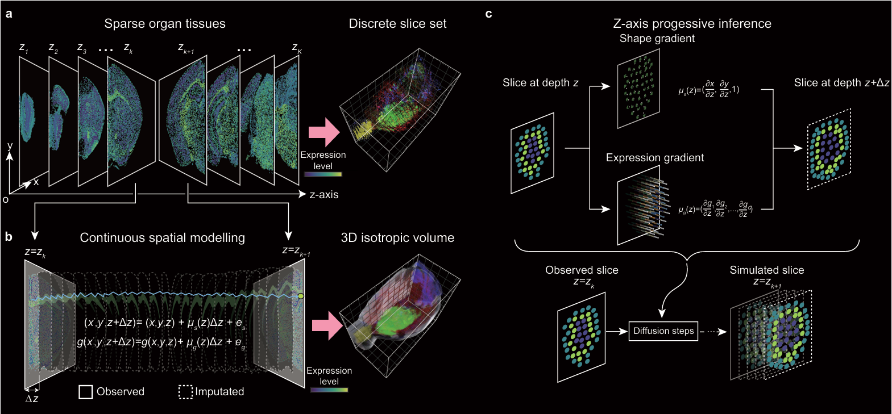
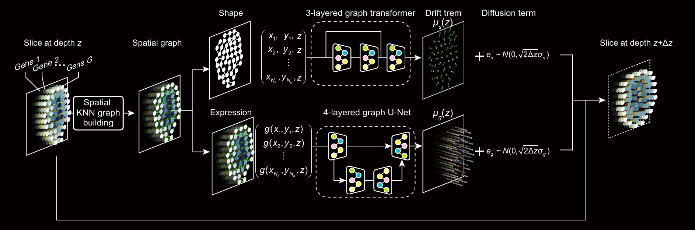

Reconstructing isotropic-resolution 3D spatial transcriptomics from serial 2D sections by modeling tissue continuity
isoST is a generative model designed to reconstruct 3D spatial transcriptomic profiles with isotropic resolutions from sparsely sampled serial sections.

Overview
Accurately mapping isotropic-resolution 3D spatial transcriptomes is a major challenge in biology. Current technologies cannot directly achieve full 3D profiling, so tissues are typically sectioned into serial 2D slices for individual profiling.
We present isoST, a framework to reconstruct continuous, isotropic-resolution 3D transcriptomic landscapes from sparsely sampled serial sections. Assuming gene expression varies smoothly in 3D space, isoST models expression dynamics along tissue depth using stochastic differential equations (SDEs), producing a continuous 3D field that enables high-fidelity reconstruction from limited slices.

Fig. 1 | An overview of the isoST.(a) isoST takes as input a series of K parallel two-dimensional (2D) spatial transcriptomics slices. (b) isoST models spatial continuity along the z-axis using stochastic differential equations (SDEs) to reconstruct 3D transcriptomics profiles at isotropic resolution. Starting from an observed slice at depth $z{k}$ , the model iteratively propagates each cell’s spatial position and gene expression to the next layer $z{k+1}$ through integration over small steps of size $\Delta z$. (c) A schematic of reconstruction steps from depth $z{k}$ to $z{k+1}$ . The shape gradient term $\mu{s}(z)$ determines the directional shift in position for each cell, while the expression gradient term $\mu{g}(z)$ estimates the gradient of gene expression used to impute the next layer.

Fig. 2 | The model architecture of isoST. Illustration of the isoST inference process from a profiled slice at depth $z$ to the next layer $z+\Delta z$ . A spatial graph is constructed using data point coordinates from the input slice. Two graph neural networks are then applied to predict the shape gradient $\mu{s}(z)$ and the expression gradient $\mu{g}(z)$.
Installation
Create the environment from the provided environment.yml (fixed versions are strongly recommended for reproducibility and to avoid dependency conflicts):
conda env create -f environment.ymlconda activate isoSTRequires a GPU compatible with
torch==1.12.0and CUDA 11.3.Includes
faiss-gpu==1.7.3and PyTorch Geometric dependencies (seeenvironment.yml).Make sure the project root is on your
sys.pathif running from a notebook (already handled inrun.ipynb).
Tutorial
1) Input Data & Directory Structure
1.1 Slice data (.pt)
For each dataset, all slices have already been preprocessed and normalized, so they can be directly used as isoST inputs without any further processing.
Each slice is stored in one .pt file, with shape N × (3 + feature_dim):
First 3 columns:
(x, y, z)spatial coordinates, wherezis the interpolation axis.Remaining columns: features (in this project: top 50 PCs of gene expression).
Normalization:
x, y: subtract each axis’s own minimum, divide both by the max width across x and y (ensures isotropic scaling in the xy-plane).
Subtract each axis’s own minimum value.
Divide both axes by the maximum width across x and y (ensuring isotropic scaling in the xy-plane).
$x' = ({x - \min(x)})/d$
$y' = ({y - \min(y)})/d$
$d=max(max(x)-min(x), max(y)-min(y))$
This ensures isotropic scaling in the xy-plane.
Python example:
x import torch
# coords: tensor of shape (N, 2) for x, y min_x, min_y = coords[:, 0].min(), coords[:, 1].min() width_x = coords[:, 0].max() - min_x width_y = coords[:, 1].max() - min_y max_width = max(width_x, width_y) coords[:, 0] = (coords[:, 0] - min_x) / max_width coords[:, 1] = (coords[:, 1] - min_y) / max_widthPC features: min–max normalization per feature.
1.2 Normalization metadata
Each dataset is accompanied by metadata files that store normalization parameters in the same folder as the .pt slices:
min_dic.csv— minimum value for each dimension (xy,PC_1, …,PC_50).scale_dic.csv— scaling factor for each dimension (for de-normalization).
Example: min_dic.csv (stores minimum values for each dimension)
| x | y | z | PC_1 | PC_2 | PC_3 | PC_4 | ... | PC_50 |
|---|---|---|---|---|---|---|---|---|
| ... |
Example: scale_dic.csv (stores scaling factors for each dimension)
| xy | PC_1 | PC_2 | PC_3 | PC_4 | ... | PC_50 |
|---|---|---|---|---|---|---|
| ... |
1.3 Gene list & PCA model
gene.csv— columngene_symbollisting all genes included in PCA.zscore_pc_model.pkl— PCA model saved with joblib, used to invert PCs back to gene expression space.These files are shared across datasets to ensure consistent feature space.
1.4 Example directory layout
All datasets follow the same folder structure and file naming conventions. Some datasets are split into subsets for training (e.g., 1_of_5, 1_of_16), while others may only provide the full dataset (1_of_1). The presence of training subsets is optional and depends on the experimental design.
xxxxxxxxxxdata_root = /path/to/isoSTproj = data/zhuang_ABCA_2/zscore_PC50_minmax
# (Optional) Training subset{data_root}/{proj}/1_of_5_normPC_1/ ├── Zhuang-ABCA-2.004_log_PC.pt ├── Zhuang-ABCA-2.005_log_PC.pt └── ...
# Full dataset for inference{data_root}/{proj}/1_of_1_normPC_1/ ├── Zhuang-ABCA-2.004_log_PC.pt ├── Zhuang-ABCA-2.005_log_PC.pt └── ...
# Metadata{data_root}/zhuang/zhuang_ABCA_2/ ├── gene.csv └── zscore_PC50_minmax/ ├── zscore_pc_model.pkl ├── min_dic.csv └── scale_dic.csvNotes:
The directory structure is identical for all datasets (mouse brain, embryo, CS7 human gastrula, kidney, spinal cord, CCFv3-derived features).
Training subsets (
1_of_m) are designed to balance dataset size and computation time. The provided splits guarantee that each subset can be trained on a single NVIDIA RTX 3090 GPU.If your available GPU memory is insufficient, you may manually use only the first
1/nportion of the data. Since the datasets were randomly shuffled before saving, taking the first fraction still yields a representative sample.File names must match the
slide_namesdefinition in the notebook (including the_log_PCsuffix).
2) Configuration file (config.yml)
Example:
xxxxxxxxxxtrainerIsoSTparams gene_dim50 # number of PCs (must match preprocessed data) hidden_dim64 # dim of latent features head_num1 lr0.001 optimizer_nameNAdam weight_decay1e-8
methodeuler delta_d0.01 # interpolation step along z-axis (Delta z) stride1 # loss computation interval along depth
std_x0.01 # sigma_x std_y0.01 # sigma_y std_z0.1 # sigma_z std_seq0.1 # sigma_g
alpha0.1 dualtrue # bidirectional trainig and inference beta_start_value1 beta_end_value0.05 beta_start_iteration50 beta_n_iterations50 warm_up_rate1
Key points:
gene_dimmust match the PC count in your.ptfiles.delta_dcontrols z-step size; smaller steps yield finer interpolation but increase runtime.stride=1is the only recommended parameter.std_*andalpha/betaparameters are for smoothing and loss scheduling.
3) Notebook Workflow (from run.ipynb)
Steps 1–2: Imports & seed fixing
xxxxxxxxxximport sysimport osimport os
project_root = os.path.abspath(os.path.join(os.getcwd(), '../../'))sys.path.append(project_root)
from utils.train_ode import biaxial_train # custom training functionfrom utils.inference import fine_inference # custom inference functionimport torchimport numpy as npimport yamlimport time
import randomdef seed_all(seed): random.seed(seed) np.random.seed(seed) torch.manual_seed(seed) torch.cuda.manual_seed_all(seed) torch.backends.cudnn.deterministic = True torch.backends.cudnn.benchmark = False
seed_all(0)Steps 3-4: Define slice names & project paths
xxxxxxxxxxslide_names_ = ['Zhuang-ABCA-2.004', 'Zhuang-ABCA-2.005', 'Zhuang-ABCA-2.006', 'Zhuang-ABCA-2.007', 'Zhuang-ABCA-2.008', 'Zhuang-ABCA-2.009', 'Zhuang-ABCA-2.010', 'Zhuang-ABCA-2.011', 'Zhuang-ABCA-2.012', 'Zhuang-ABCA-2.013', 'Zhuang-ABCA-2.014', 'Zhuang-ABCA-2.015', 'Zhuang-ABCA-2.016', 'Zhuang-ABCA-2.017', 'Zhuang-ABCA-2.018', 'Zhuang-ABCA-2.019', 'Zhuang-ABCA-2.020', 'Zhuang-ABCA-2.021', 'Zhuang-ABCA-2.022', 'Zhuang-ABCA-2.023', 'Zhuang-ABCA-2.025', 'Zhuang-ABCA-2.026', 'Zhuang-ABCA-2.027', 'Zhuang-ABCA-2.028', 'Zhuang-ABCA-2.030', 'Zhuang-ABCA-2.031', 'Zhuang-ABCA-2.032', 'Zhuang-ABCA-2.033', 'Zhuang-ABCA-2.034', 'Zhuang-ABCA-2.035', 'Zhuang-ABCA-2.036', 'Zhuang-ABCA-2.037', 'Zhuang-ABCA-2.039', 'Zhuang-ABCA-2.040', 'Zhuang-ABCA-2.041', 'Zhuang-ABCA-2.042', 'Zhuang-ABCA-2.044', 'Zhuang-ABCA-2.045', 'Zhuang-ABCA-2.046', 'Zhuang-ABCA-2.047', 'Zhuang-ABCA-2.048', 'Zhuang-ABCA-2.049', 'Zhuang-ABCA-2.050', 'Zhuang-ABCA-2.051', 'Zhuang-ABCA-2.052', 'Zhuang-ABCA-2.053', 'Zhuang-ABCA-2.054', 'Zhuang-ABCA-2.055', 'Zhuang-ABCA-2.056', 'Zhuang-ABCA-2.057', 'Zhuang-ABCA-2.058', 'Zhuang-ABCA-2.059', 'Zhuang-ABCA-2.060', 'Zhuang-ABCA-2.061']
dim = 50slide_names = [f'{name}_log_PC' for name in slide_names_]
proj = f'data/zhuang/zhuang_ABCA_2/zscore_PC{dim}_minmax'batch_num = 5 # 1_of_5 subset exampledata_dir = os.path.join(project_root, 'data', f'{proj}/1_of_{batch_num}_normPC_1')Key points:
The slice names are ordered by their z-axis positions (ascending or descending is acceptable, but the order must be consistent)
Step 5: Load config
xxxxxxxxxxwith open(config_file, 'r') as f: config = yaml.safe_load(f)dd = config['params']['delta_d']Step 6: Training parameters
xxxxxxxxxxdevice = 'cuda:0'checkpoint_every = 20backup_every = 5epochs = [100, 100, 100] # three training phasesmode = 'joint'Step 7: Create experiment and result directories
xxxxxxxxxxexperiment_dir = f'experiments' # saving the config file and model parameterresult_dir = f'result' # saving the inference resultif not os.path.exists(result_dir): os.makedirs(result_dir)Step 8: Train
xxxxxxxxxxfrom utils.train_ode import biaxial_train
"""Main training function for isoST.This function:1) Loads configuration settings2) Initializes the trainer3) Loads the dataset4) Runs the training loop
Args: experiment_dir (str): Path to save experiment outputs and checkpoints. data_dir (str): Path to preprocessed input data. slide_names (list): List of slice identifiers (without file extension). batch_num (int): Number of batches (or subset index) used for training. config_file (str): Path to YAML configuration file. device (str): Device identifier (e.g., 'cuda:0' or 'cpu'). checkpoint_every (int): Interval (epochs) to save model checkpoints. backup_every (int): Interval (epochs) to save backup checkpoints. epoch (list): Training epochs for each phase. mode (str): Training mode (e.g., 'joint', 'shape', 'expression')."""
biaxial_train( experiment_dir=experiment_dir, data_dir=data_dir, slide_names=slide_names, batch_num=1, config_file=config_file, device=device, checkpoint_every=checkpoint_every, backup_every=backup_every, epoch=epochs, mode=mode)
Step 9: Inference on full dataset
xxxxxxxxxxfrom utils.inference import fine_inference"""Perform fine-grained inference using a trained isoST model.
This function:1) Loads a pretrained model and configuration from experiment_dir2) Initializes the trainer3) Runs the fine inference process to reconstruct intermediate slices
Args: experiment_dir (str): Directory containing trained model and config. data_dir (str): Path to preprocessed input data (full dataset for inference). u_name_list (list): List of slice identifiers for inference. mode (str): Inference mode (e.g., 'joint', 'shape', 'expression'). defined_d (float): Δz step size for interpolation during inference. result_dir (str): Directory to save inference outputs. batch_num (int): Number of batches (or subset index) used in inference. device (str): Device to run inference on ('cuda' or 'cpu')."""total_data_dir = os.path.join(project_root, 'data', f'{proj}/1_of_1_normPC_1')fine_inference( experiment_dir, total_data_dir, slide_names, mode, dd, result_dir, batch_num, device)4) Post-processing (3D volume reconstruction)
Step 10: Initialize processor
xxxxxxxxxxfrom utils.postprocess import VolumeProcessorgene_path = os.path.join(project_root, 'data', f'zhuang_ABCA_2/gene.csv')gene = pd.read_csv(gene_path, index_col=0)
processor = VolumeProcessor( data_dir=f"{data_root}/zhuang/zhuang_ABCA_2", result_dir=result_dir, volume_size=(1.0, 0.8, 0.5), gene_list=gene['gene_symbol'].tolist(), max_lence=220)
Step 11: Convert to voxel volume
xxxxxxxxxxvolume, count = processor.result_to_volume(n_features=50, swamp=True)pc_df = processor.volume_to_df(volume)
np.save(f"{result_dir}/volume.npy", volume)np.save(f"{result_dir}/density.npy", count)pc_df.to_csv(f"{result_dir}/pc_volume.csv")
5) PC → Gene expression recovery
Step 12: Inverse transform using PCA model
xxxxxxxxxximport joblib
def load_model(model_path): pca_model = joblib.load(model_path) return pca_model
model_path = os.path.join(project_root, 'data', f'{proj}/zscore_pc_model.pkl')pc_model = load_model(model_path)
processor.pc_to_expression(volume, pc_model, 220)Outputs a parquet file:
xxxxxxxxxximport pyarrow.parquet as pqtable = pq.read_table(f"{result_dir}/log2_expr_220_all_pc.parquet")predictions = table.to_pandas().astype('float32')
6) Visualization
The notebook uses Plotly for interactive 3D visualization of points/voxels (scene_dragmode='orbit', aspectmode='data').
You can visualize from:
volume.npy(PC volume)density.npy(point density)Parquet gene expression output
7) Output Checklist
experiments/: training checkpoints & logsresult/volume.npy: PC volume arrayresult/density.npy: voxel density arrayresult/pc_volume.csv: PCs in table formresult/log2_expr_220_all_pc.parquet: log2 gene expression volume
Consistency checks:
gene_dimin config matches feature_dim in.ptslide_namesmatch.ptfilenames (_log_PCsuffix)min_dic.csv&scale_dic.csvare present with.ptfilesPCA model matches PC count
Adjust
delta_dorbatch_numfor memory/runtime balance
Copyright
Software provided as is under MIT License.
Bohan Li @ 2025 BUAA and Deng ai Lab
Permission is hereby granted, free of charge, to any person obtaining a copy of this software and associated documentation files (the "Software"), to deal in the Software without restriction, including without limitation the rights to use, copy, modify, merge, publish, distribute, sublicense, and/or sell copies of the Software, and to permit persons to whom the Software is furnished to do so, subject to the following conditions:
The above copyright notice and this permission notice shall be included in all copies or substantial portions of the Software.
THE SOFTWARE IS PROVIDED "AS IS", WITHOUT WARRANTY OF ANY KIND, EXPRESS OR IMPLIED, INCLUDING BUT NOT LIMITED TO THE WARRANTIES OF MERCHANTABILITY, FITNESS FOR A PARTICULAR PURPOSE AND NONINFRINGEMENT. IN NO EVENT SHALL THE AUTHORS OR COPYRIGHT HOLDERS BE LIABLE FOR ANY CLAIM, DAMAGES OR OTHER LIABILITY, WHETHER IN AN ACTION OF CONTRACT, TORT OR OTHERWISE, ARISING FROM, OUT OF OR IN CONNECTION WITH THE SOFTWARE OR THE USE OR OTHER DEALINGS IN THE SOFTWARE.